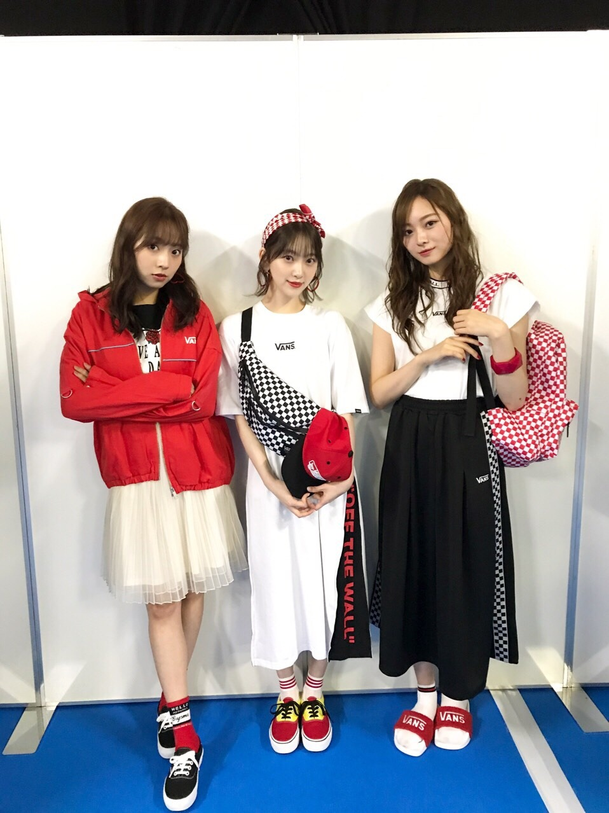

2019/0519Sunトマトの力を信じます
夏が近づくと、奥多摩に行きたくなります
なりませんか？
私はなります
一回ロケで行ったのですが、自然が綺麗で美味しいハンバーグもあって地元の岐阜県に近いものを感じ虜になりました
日焼けは怖いけど
でも外に出たい
日焼け対策万全で今年も夏を楽しめたらと思います
太陽って素晴らしいと思うんです
(急に)
だって陽を浴びないとまず体が起きないし頭もすっきりしないし外に出て陽を浴びて風に吹かれるのは体と心の健康を保つためにも大事だと思っています

と言いながら私は皮膚が弱く
日光アレルギーとやらに昨年初めてなりました...
長時間、強い陽を浴びると湿疹が出てしまうので神宮ライブも実はリハから大変でした。笑
アレルギー多すぎて泣ける...
ハウスダスト ダニ カビ 花粉4種類 ネコ ウサギ 日光
体質改善で良くなるものなのかなぁ？？
試せるものは試してみようと思います！
がんばれ、わたし！

最近はロングワンピースを集めています
さらっと着れてラクだし涼しいし
いろんな生地のがあって着心地もよくて...
ガーリーなのもあればシンプルなのもあるので今年の夏はたくさん着たいです

昨日のガールズアワードにて
飯窪春菜氏、かわいい

札幌コレクションも楽しかったなー
明日、20日19:00〜
ネプリーグ に出させていただきます！
頑張りました、、
コンフィデンスマンチームの皆さんが本当に優しくて感動...
映画早く観たいです！
では☺︎
2019/05/19 12:00
コメント(326)
ブログ更新ありがとう！
奥多摩行ったことないな〜
でもみおちゃんが言ってるの聞いて行ってみたくなった！
いける時あったら行ってみる☺︎
ロングワンピースいいよね！
わたしも気になってるのあるんだ〜！
わたしの場合は足出す自信がないから好んでるだけなんだけどね笑
昨日のガールズアワードLINE LIVEみたいなので見たよ！
浴衣似合ってた❤︎
ネプリーグ予約済みだよ〜！
楽しみにしてるね☺︎
奥多摩行ったことないな〜
でもみおちゃんが言ってるの聞いて行ってみたくなった！
いける時あったら行ってみる☺︎
ロングワンピースいいよね！
わたしも気になってるのあるんだ〜！
わたしの場合は足出す自信がないから好んでるだけなんだけどね笑
昨日のガールズアワードLINE LIVEみたいなので見たよ！
浴衣似合ってた❤︎
ネプリーグ予約済みだよ〜！
楽しみにしてるね☺︎
トマトに嫌われているー♪
更新ありがとう
かわええのー
地元でゆっくりすのも良いですね！
ブログ更新ありがと！！✨
アレルギー大変ですね
頑張ってください！！
アレルギー大変ですね
頑張ってください！！
ブログ更新ありがとう
未央奈ちゃんアレルギーそんなにあったんだびっくり‼️
札幌コレクションお疲れ様！
奥多摩行きたい！
体調に気をつけて無理せず頑張ってください
ネプリーグも楽しみにしてます！
これからも応援してます❗️未央奈ちゃん大好きです
未央奈ちゃんアレルギーそんなにあったんだびっくり‼️
札幌コレクションお疲れ様！
奥多摩行きたい！
体調に気をつけて無理せず頑張ってください
ネプリーグも楽しみにしてます！
これからも応援してます❗️未央奈ちゃん大好きです
ブログ更新ありがとう！
今日もかわいい！次の握手会行けるように頑張るね
今日もかわいい！次の握手会行けるように頑張るね
奥多摩のハンバーグって、ハンバーガーとハンバーグどっちがいいかみたいなロケだよね？！
堀ちゃん、すきぴ！！！
更新ありがとうございます！
アレルギーには気をつけてください！！
ワンピース好きなのでもっと見たいです！
アレルギーには気をつけてください！！
ワンピース好きなのでもっと見たいです！
ネプリーグ楽しみにしてるね
ネプリーグ見るよ！！
日光アレルギー大変そうだね、
札幌コレクションの服ばりすき笑笑
では✋
日光アレルギー大変そうだね、
札幌コレクションの服ばりすき笑笑
では✋
明日のネプリーグ楽しみ(^^)
ガルアワおつかれ様でした！
日光アレルギー辛い。。
ワンピースわたしも好きですよ❤︎
今度お気に入りの洋服とかコスメとか紹介してほしいです~♩
ブログ毎回たのしくみてます！ありがとう！
日光アレルギー辛い。。
ワンピースわたしも好きですよ❤︎
今度お気に入りの洋服とかコスメとか紹介してほしいです~♩
ブログ毎回たのしくみてます！ありがとう！
未央ちゃんブログ更新ありがとう(^^)
昨日はガルアワお疲れ様
浴衣可愛いかったよ
明日ネプリーグ見るね(^ ^)
映画コンフィデンスマンjp見ないとね^_^
斉藤貴巳
昨日はガルアワお疲れ様
浴衣可愛いかったよ
明日ネプリーグ見るね(^ ^)
映画コンフィデンスマンjp見ないとね^_^
斉藤貴巳
こんにちは(^-^)/
奥多摩行ってみたい！
明日のネプリーグ楽しみです。
奥多摩行ってみたい！
明日のネプリーグ楽しみです。
大好きです！
アレルギーは本当に大変ですよね꒰༎ຶ﹏༎ຶ๑꒱
僕も日光アレルギーになってしまい、年がら年中長袖を着ています。
夏は暑くてたまらんけど、アレルギーで湿疹ができるよりマシかなって思って諦めていますが、体質改善してみようかな٩( *˙0˙*)۶
僕も日光アレルギーになってしまい、年がら年中長袖を着ています。
夏は暑くてたまらんけど、アレルギーで湿疹ができるよりマシかなって思って諦めていますが、体質改善してみようかな٩( *˙0˙*)۶
今月のarの堀ちゃんみました！足がとてもきれいでかわいかったです！明日ネプリーグみます！
堀ちゃん頑張って✊ ✊
ついにネプリーグだね！楽しみです！
日焼けに弱いのは遺伝するのかな。
我が家は私も嫁さんも弱くて子供も弱いです。
来週小学校の運動会。涼しくなってほしい
日焼けに弱いのは遺伝するのかな。
我が家は私も嫁さんも弱くて子供も弱いです。
来週小学校の運動会。涼しくなってほしい
堀さんブログ更新ありがとうございます
黒いロングワンピースが大人っぽくて綺麗な堀さんに凄い似合ってます！
あと、昨日のGirlsAwardはLINEライブで見てて
浴衣でランウェイを歩く堀さんとSing Outを披露している時とで髪型もなんですけど、雰囲気が全然違って堀さん凄いな～と思って見てました
明日のネプリーグも早速予約したので休憩時間とかに見ようと思います
黒いロングワンピースが大人っぽくて綺麗な堀さんに凄い似合ってます！
あと、昨日のGirlsAwardはLINEライブで見てて
浴衣でランウェイを歩く堀さんとSing Outを披露している時とで髪型もなんですけど、雰囲気が全然違って堀さん凄いな～と思って見てました
明日のネプリーグも早速予約したので休憩時間とかに見ようと思います
堀未央奈❤こんにちは❗服可愛いね 似合ってるよ 未央奈は、行きたくなるんだね。俺はないかな❗アレルギー沢山あるんだね にゃんこも駄目なんだね。可愛いのにね。未央奈が一番可愛いよ(*^_^*)これからも頑張ってね(^-^)vネプリンーグ楽しかった？全部分かったかな？
未央奈ちゃんこんにちは‼ありがとうございます！楽しみにしてます‼頑張ります‼ありがとうございます！頑張ります‼
アレルギー沢山あるのに気をつけて頑張ってるの逆に尊敬するする
写真かわいすぎ
そのvansのシャツかわすぎやろ！最高！
アレルギーたくさんあって大変そうだな
堀ちゃんはなんの日焼け止め使ってるの？
堀ちゃんはなんの日焼け止め使ってるの？
今日の朝ごはんはカレーでした
こんにちは。
アレルギー大変ですね。
ネプリーグ見ます。
アレルギー大変ですね。
ネプリーグ見ます。
ブログ更新ありがとうm(__)m奥多摩、景色がいいよね 身体に気をつけてねm(__)mお互いに頑張りましょうねm(__)m
奥多摩か～、あまり詳しく無いので調べてみますね。
僕も愛知ぐらしでお盆に親族で岐阜に集まるのですが、よく家の裏にある川で鮎釣りをします。岐阜の川と山は最高ですよね！
日光アレルギーってのは初めて聞きました。僕も食べ物から花粉にハウスダストまで20個ぐらいかな？結構持ってるのですごく分かります。自分は高校生なのでまだ成長と共にマシにはなっているのですが大人はどうなのでしょう？食べ物だと少しずつなれるといいと言いますが……、互い色々試して頑張りましょう笑
夏は着る服の枚数が少ないのでオシャレは難しいですよね…、小物にも気を使わないといけないですし。男ですがブログだったり色んな所で色んな服を着た未央奈を見るのがすごく楽しいです(о´∀`о)やっぱスタイルがいいと似合う服も多いですね。僕も夏に向けて体づくりはじめようと思います。
そして昨日のガルアワお疲れ様でした！浴衣すっごく似合ってました！！ライブお疲れ様です。モデルとしての未央奈もこれからも応援してます！
そして明日のネプリーグ！すごく楽しみです。今からテレビの前で正座してまってますね。
お身体に気をつけて。では！！
僕も愛知ぐらしでお盆に親族で岐阜に集まるのですが、よく家の裏にある川で鮎釣りをします。岐阜の川と山は最高ですよね！
日光アレルギーってのは初めて聞きました。僕も食べ物から花粉にハウスダストまで20個ぐらいかな？結構持ってるのですごく分かります。自分は高校生なのでまだ成長と共にマシにはなっているのですが大人はどうなのでしょう？食べ物だと少しずつなれるといいと言いますが……、互い色々試して頑張りましょう笑
夏は着る服の枚数が少ないのでオシャレは難しいですよね…、小物にも気を使わないといけないですし。男ですがブログだったり色んな所で色んな服を着た未央奈を見るのがすごく楽しいです(о´∀`о)やっぱスタイルがいいと似合う服も多いですね。僕も夏に向けて体づくりはじめようと思います。
そして昨日のガルアワお疲れ様でした！浴衣すっごく似合ってました！！ライブお疲れ様です。モデルとしての未央奈もこれからも応援してます！
そして明日のネプリーグ！すごく楽しみです。今からテレビの前で正座してまってますね。
お身体に気をつけて。では！！
未央奈、こんにちは。
アレルギー多くて大変。
最近、あまりにも未央奈が白すぎて、線が細く見えるから
どこか、体調崩しているかと思ってました。
日にあたれないんだね
何かいい方法が見つかるといいね。
アレルギー持ちの辛さはわかるから。
私は最近、発酵食品、たくさん摂るようにしてるよ。
ヨーグルトや納豆を毎食。
ライブは、ナゴヤドーム、頑張ってとるからね。
テレビ番組も、最近、たくさん観れるから○です。
それではまたね。
アレルギー多くて大変。
最近、あまりにも未央奈が白すぎて、線が細く見えるから
どこか、体調崩しているかと思ってました。
日にあたれないんだね
何かいい方法が見つかるといいね。
アレルギー持ちの辛さはわかるから。
私は最近、発酵食品、たくさん摂るようにしてるよ。
ヨーグルトや納豆を毎食。
ライブは、ナゴヤドーム、頑張ってとるからね。
テレビ番組も、最近、たくさん観れるから○です。
それではまたね。
ワンピースの写真、とてもお美しいです。好き。
私は奥多摩行ったことないから行ってみたいなぁ！岐阜はめちゃ行ったことあるよ！日焼けは怖いけど外に出たいっていうのめちゃわかる！モデル未央奈よかったよ！！
ももんが
ももんが
とてもかわいいです これからもずっと応援してます！
奥多摩行って渓流釣りして
魚お腹すかせまくってるのに
俺だけ一匹も釣れなくて
涙したあの日がよみがえります涙
太陽？うんうん素晴らしいねー
...って日光アレルギーなんかーーい！！
確かにアレルギー多いね...
ちょっと調べたら体質改善で
良くなるものも無きにしもあらず
みたいだよー
がんばれ、堀ちゃん！
ネプリーグ楽しみーーー！！！
魚お腹すかせまくってるのに
俺だけ一匹も釣れなくて
涙したあの日がよみがえります涙
太陽？うんうん素晴らしいねー
...って日光アレルギーなんかーーい！！
確かにアレルギー多いね...
ちょっと調べたら体質改善で
良くなるものも無きにしもあらず
みたいだよー
がんばれ、堀ちゃん！
ネプリーグ楽しみーーー！！！
アレルギー私と全くおなじ！笑
鼻水が辛い、、、
猫アレルギーだけど、猫触ったことないからどうなるのか分からない笑
鼻水が辛い、、、
猫アレルギーだけど、猫触ったことないからどうなるのか分からない笑
未央奈、ブログ更新ありがとう。
体調に気を付けてくださいね。
またの更新、待ってます。
体調に気を付けてくださいね。
またの更新、待ってます。
私も日光アレルギーだから、みおなちゃんがどんなことしてるか知りたいな
奥多摩行きたくなる気持ちめっちゃ分かります！！
まだ行ったことないからいつか行くね！
まだ行ったことないからいつか行くね！
かわいすぎる〜
みおちゃ～ん！ ブログ更新ありがとう(^o^)
ブログ更新ありがとう(^o^)
ガールズアワード、めっちゃ可愛かったよ
ネプリーグ楽しみです♪
みおちゃんの事応援してるので、
これからも頑張って下さい✨
ガールズアワード、めっちゃ可愛かったよ
ネプリーグ楽しみです♪
みおちゃんの事応援してるので、
これからも頑張って下さい✨
ブログ更新ありがとう〜！
昨日はGirlsAwardお疲れ様でした！ランウェイの未央奈ちゃんはアイドルの時とはまた違った雰囲気、表情で惹かれます…⸜(*ˊᵕˋ*)⸝
日焼けは嫌だけど、太陽のおかげで植物は育つし、美味しいご飯が食べられるし、感謝することも多いですよね！奥多摩いつか行ってみたいな〜近場に故郷を感じられる場所があるって素敵︎☺︎
ロングワンピース、サラッと着られるし涼しいし私も夏よく着てます！未央奈ちゃんワンピースすごく似合ってる︎し、清楚で可愛い♡
ライブを大切にしているアイドルが日光アレルギーは本当に大変だね…昨年は体調の面でアレルギーになりやすくなっていた可能性もあると思うけど、日光アレルギーって単純に日光だけが原因のものと、使っている日焼け止めとか美容用品と日光が反応を起こして症状が現れるものがあるんだって！お仕事忙しいと思うけど、美容用品と日光の関係を調べるテストをしてくれるみたいだから病院で調べてもらうのもいいかも…！
私も春と秋は花粉症に悩まされているから、更にアレルギーが多い未央奈ちゃんはもっと大変だろうなって思います…
少しでも改善されますように！
昨夜のシブヤノオトすごく可愛くて癒されました！
ネプリーグも楽しみにしています！
昨日はGirlsAwardお疲れ様でした！ランウェイの未央奈ちゃんはアイドルの時とはまた違った雰囲気、表情で惹かれます…⸜(*ˊᵕˋ*)⸝
日焼けは嫌だけど、太陽のおかげで植物は育つし、美味しいご飯が食べられるし、感謝することも多いですよね！奥多摩いつか行ってみたいな〜近場に故郷を感じられる場所があるって素敵︎☺︎
ロングワンピース、サラッと着られるし涼しいし私も夏よく着てます！未央奈ちゃんワンピースすごく似合ってる︎し、清楚で可愛い♡
ライブを大切にしているアイドルが日光アレルギーは本当に大変だね…昨年は体調の面でアレルギーになりやすくなっていた可能性もあると思うけど、日光アレルギーって単純に日光だけが原因のものと、使っている日焼け止めとか美容用品と日光が反応を起こして症状が現れるものがあるんだって！お仕事忙しいと思うけど、美容用品と日光の関係を調べるテストをしてくれるみたいだから病院で調べてもらうのもいいかも…！
私も春と秋は花粉症に悩まされているから、更にアレルギーが多い未央奈ちゃんはもっと大変だろうなって思います…
少しでも改善されますように！
昨夜のシブヤノオトすごく可愛くて癒されました！
ネプリーグも楽しみにしています！
未央奈ちゃん、ガルアワお疲れ様でしたー。ネプリーグ楽しみ。おバカキャラは嫌よ…
ロングワンピースめっちゃ似合ってる！綺麗！
ネプリーグ楽しみ！
ネプリーグ楽しみ！
堀ちゃん、こんにちは＼(・ω・)／
初夏ですなぁ
今日はすごく暑いね。
奥多摩かどうか分からないけど、何ヶ月か前に秩父の方に行ったことあるよ。
まだ冬だったから、山なんかは”冬眠中”って感じだったけど
日光アレルギー、大変だね
アレルギーなら、僕は食べ物で唯一タコが食べられない。
日光アレルギーについてネットで調べてみたら、「ソラレンという成分を含むセロリ、きゅうり、レモン、オレンジ、グレープフルーツには紫外線に過敏に反応し紫外線を受け入れやすく肌にダメージを与えてしまう「光毒性」がある」だとか。
ただ、これらはビタミンCが多く含まれていて、健康にも美肌にもいいから、食べるタイミングに気をつければＯＫだってさ。
ソラレンは摂取後約2時間で全身に行き渡るので、朝や日中を避け「夜」のメニューに取り入れるといいらしい。
あと、過度なダイエットやストレスも紫外線アレルギーを発症しやすくなるって。
まあ、ネットの情報だから、どこまで本当かは分からないけど・・・。
あとは、日焼け対策だね
あれっ？
まなったんだけでなく、堀ちゃんもネプリーグに出演するの？
ＯＫ、録画予約しておくね
初夏ですなぁ
今日はすごく暑いね。
奥多摩かどうか分からないけど、何ヶ月か前に秩父の方に行ったことあるよ。
まだ冬だったから、山なんかは”冬眠中”って感じだったけど
日光アレルギー、大変だね
アレルギーなら、僕は食べ物で唯一タコが食べられない。
日光アレルギーについてネットで調べてみたら、「ソラレンという成分を含むセロリ、きゅうり、レモン、オレンジ、グレープフルーツには紫外線に過敏に反応し紫外線を受け入れやすく肌にダメージを与えてしまう「光毒性」がある」だとか。
ただ、これらはビタミンCが多く含まれていて、健康にも美肌にもいいから、食べるタイミングに気をつければＯＫだってさ。
ソラレンは摂取後約2時間で全身に行き渡るので、朝や日中を避け「夜」のメニューに取り入れるといいらしい。
あと、過度なダイエットやストレスも紫外線アレルギーを発症しやすくなるって。
まあ、ネットの情報だから、どこまで本当かは分からないけど・・・。
あとは、日焼け対策だね
あれっ？
まなったんだけでなく、堀ちゃんもネプリーグに出演するの？
ＯＫ、録画予約しておくね
未央奈ちゃん＼(^o^)／お疲れ様でした
コンフィデンスの力はなんの力かな？（笑）
日光嫌いすぎてついにアレルギ発生したか(;_;)
本当に気をつけてね
きゃーーー未央奈ちゃんの黒いロングスカート姿は可愛すぎるよ(｡>﹏<｡)♡♡♡♡♡
肌の白さにコントラストして凄く大人っぽく見え、魅力的だなあ(｡>﹏<｡)♡♡♡♡
ガルアワお疲れ様でした＼(^o^)／
これからも頑張って(/･ω･)/
コンフィデンスの力はなんの力かな？（笑）
日光嫌いすぎてついにアレルギ発生したか(;_;)
本当に気をつけてね
きゃーーー未央奈ちゃんの黒いロングスカート姿は可愛すぎるよ(｡>﹏<｡)♡♡♡♡♡
肌の白さにコントラストして凄く大人っぽく見え、魅力的だなあ(｡>﹏<｡)♡♡♡♡
ガルアワお疲れ様でした＼(^o^)／
これからも頑張って(/･ω･)/


更新ありがとー！
札幌コレクション、おつかれさまでした！
ロングワンピ、可愛いよー！！